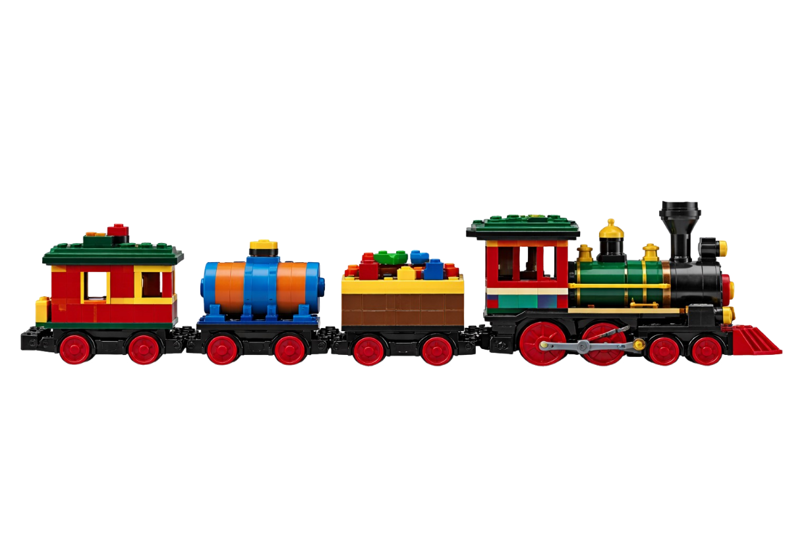
🚂 夢想號
STATION 1. 造型積木
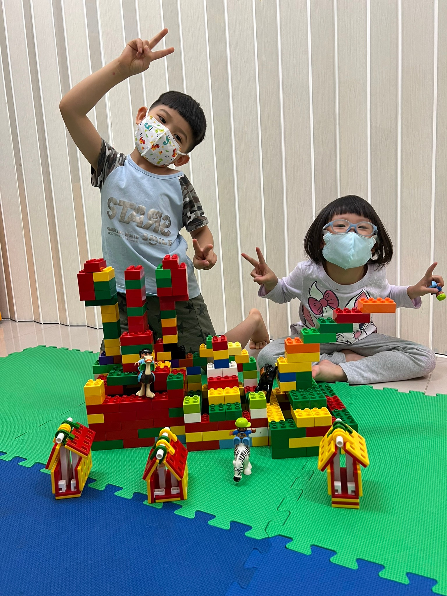

樂高以外：啟蒙起點 (小班)
- 🎯 特色：故事繪本引導 + 生活情境轉化
- 🛠 重點：多元素材 (磁鐵、梳子、LASY)
- ✨ 能力：語言表達、想像力、自信心
STATION 2. 簡易機械
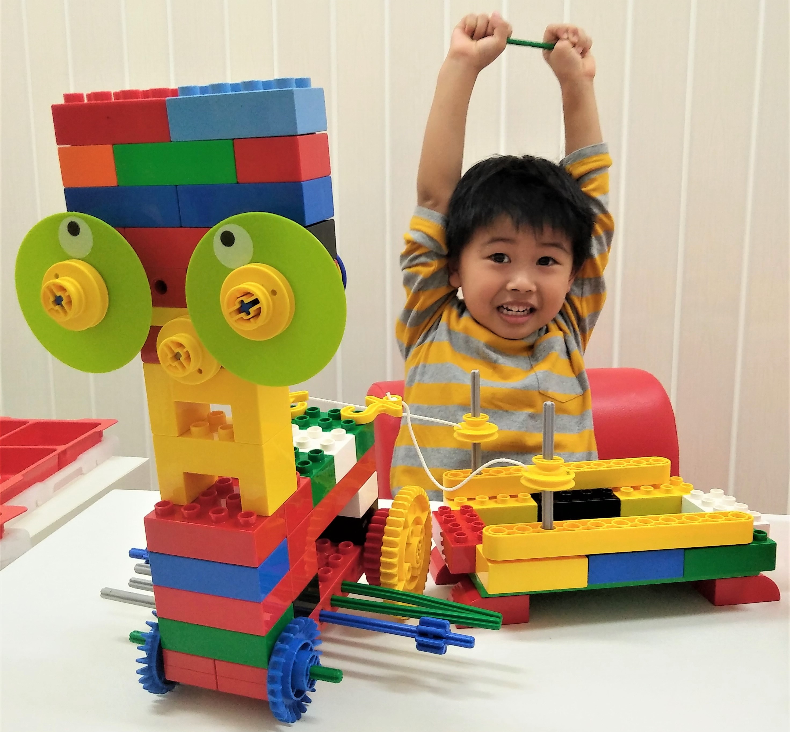
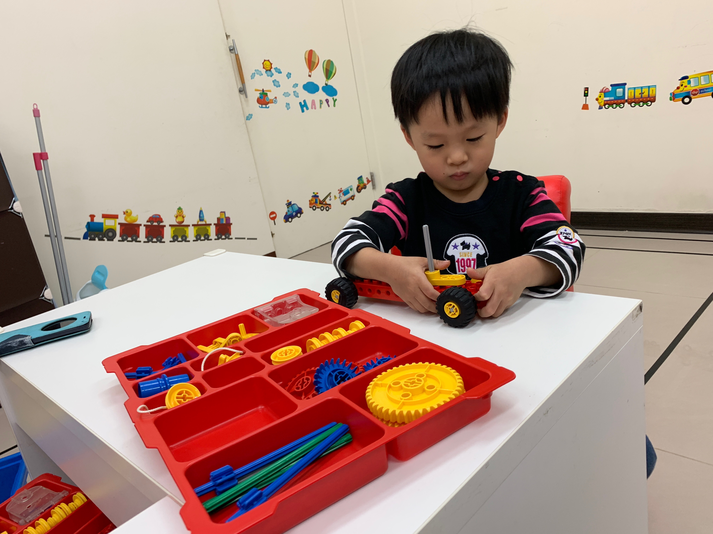
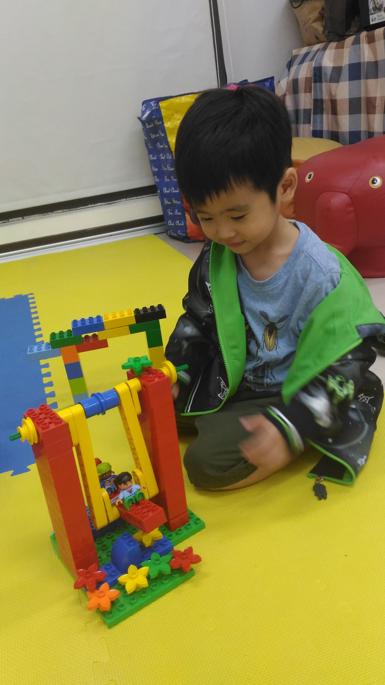
 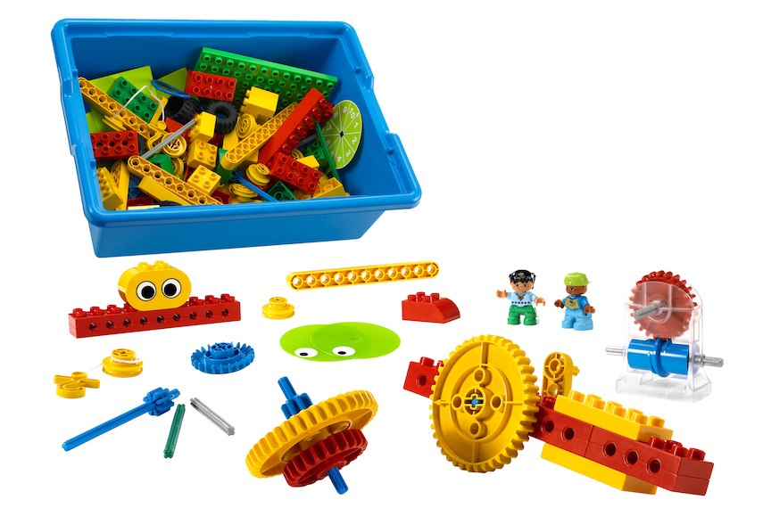
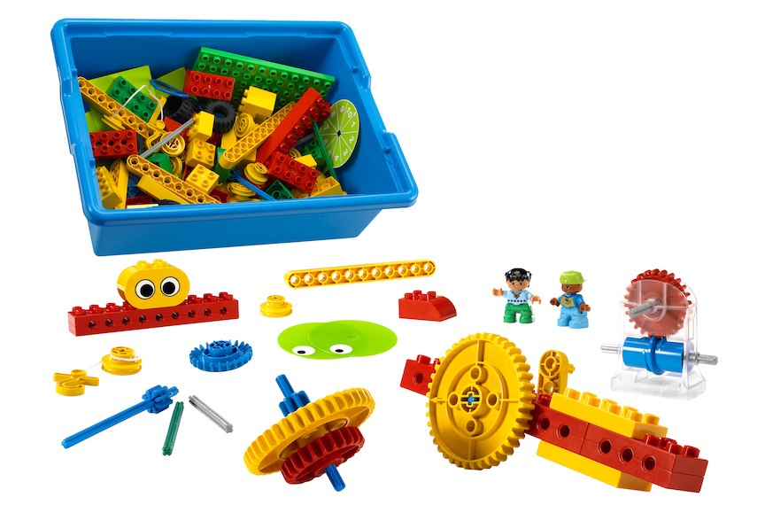
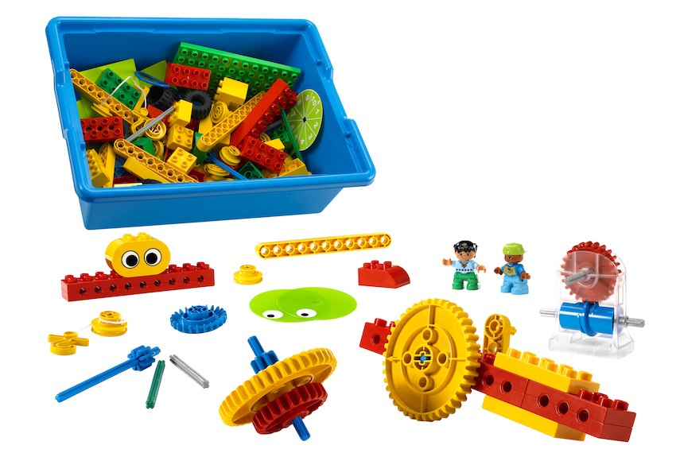
工程思維體系 (中班 | 80堂)
- ⚙️ 重點：齒輪、槓桿、滑輪，理解力傳遞
- 🧠 能力：邏輯思考、問題觀察、手眼協調
STATION 3. 動力機械
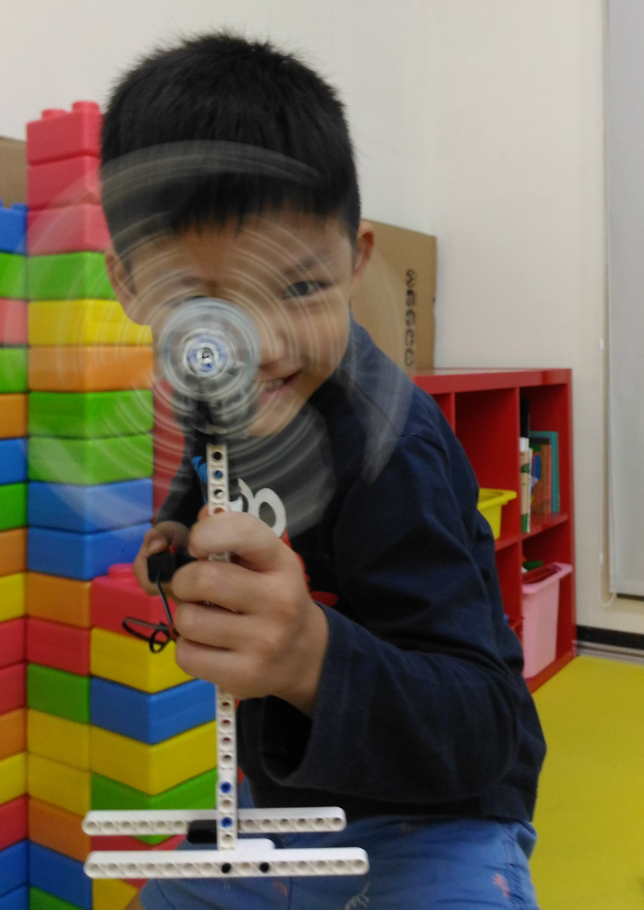
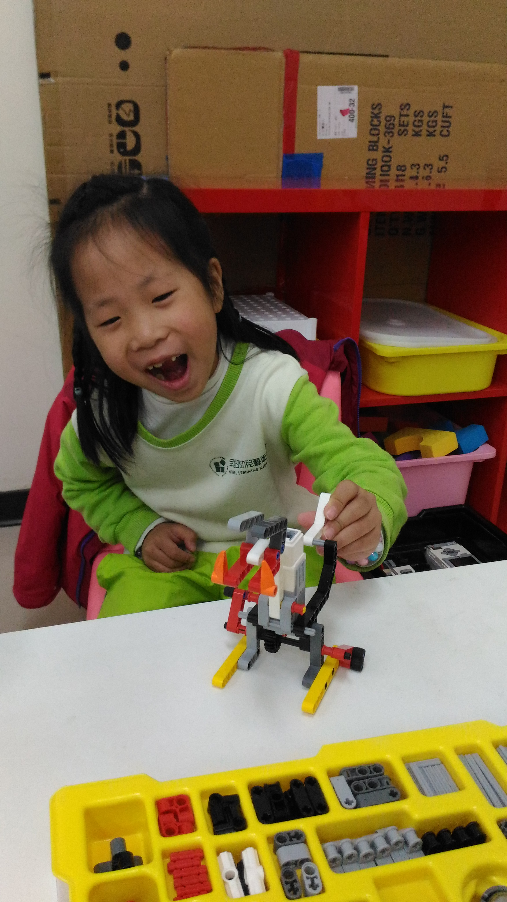
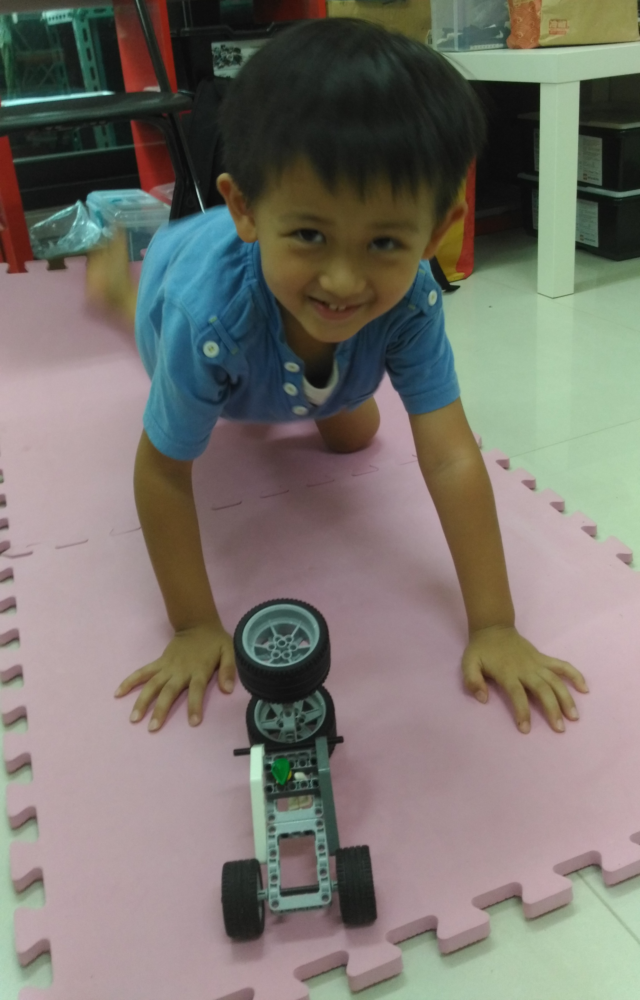
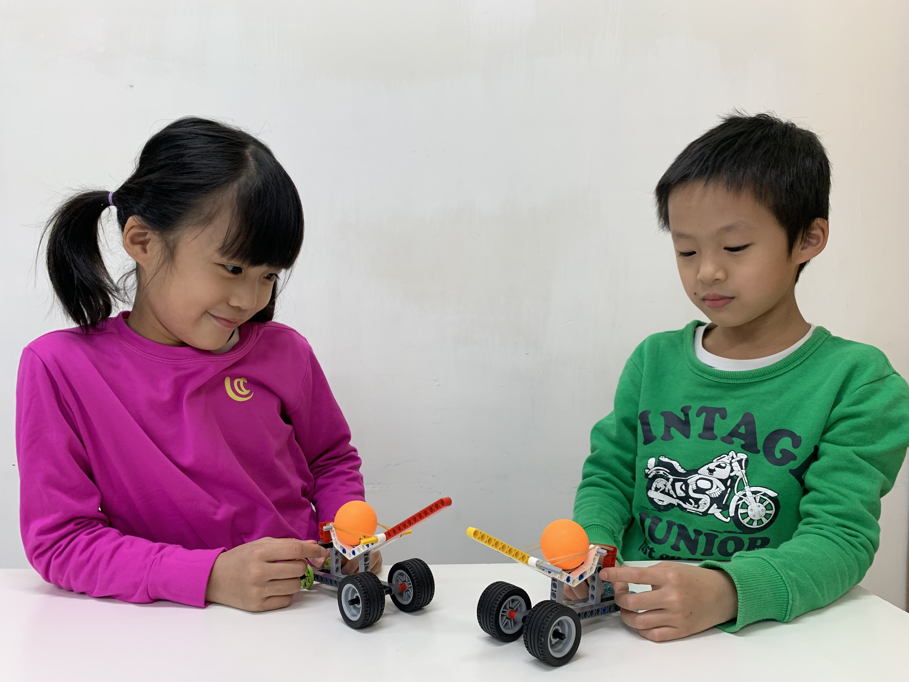
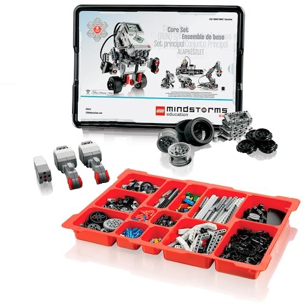
機械動起來 (大班以上 | 150堂)
- ⚡ 重點：馬達、傳動系統、齒輪比、結構
- 🏗 能力：工程分析、問題解決、耐心
STATION 4. WeDo 機器人
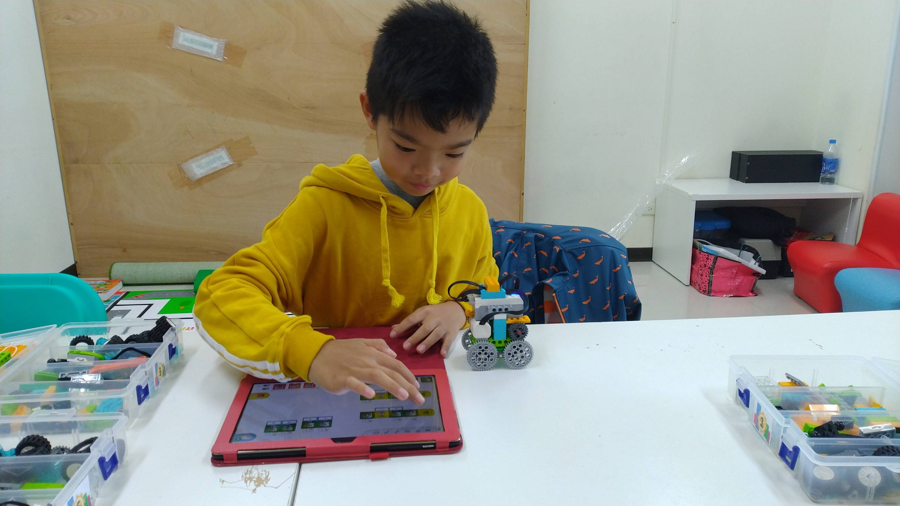
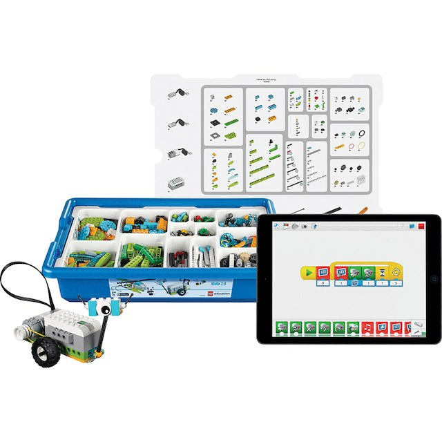
自動化控制 (三年級+ | 100堂)
※ 需通過動力機械進階測試
- 📱 重點：圖像化程式 + 感應器 + 自動控制
- 🔗 能力：因果關係、系統化思考、程式邏輯
STATION 5. EV3 機器人


 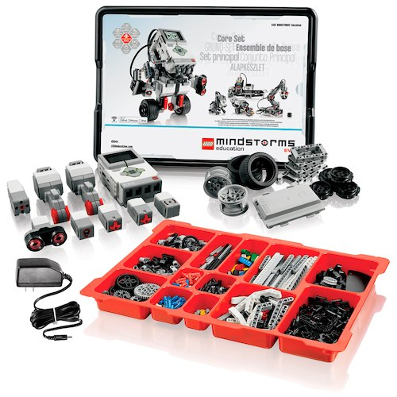
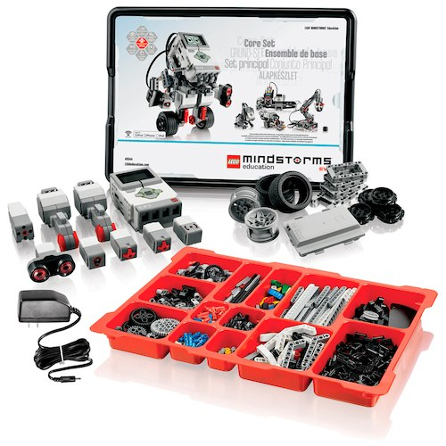
競賽級挑戰 (四年級+ | 155堂)
- 🏆 重點：進階設計、任務程式、競賽模擬
- 🤝 能力：策略規劃、團隊合作、高壓解決問題
STATION 6. Scratch 程式
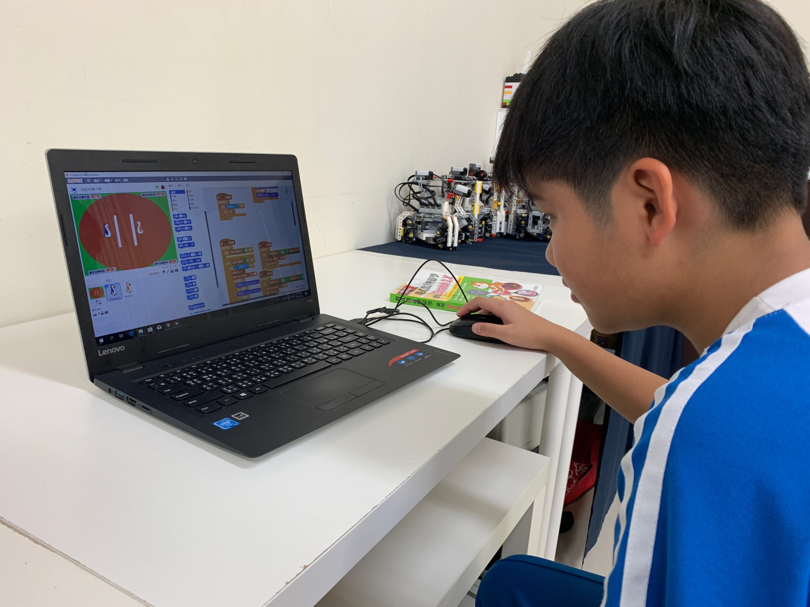
純程式路徑 (三年級以上)
- 💻 重點：純程式邏輯、事件迴圈、遊戲動畫
- 🎨 能力：運算思維、數位創作表達力